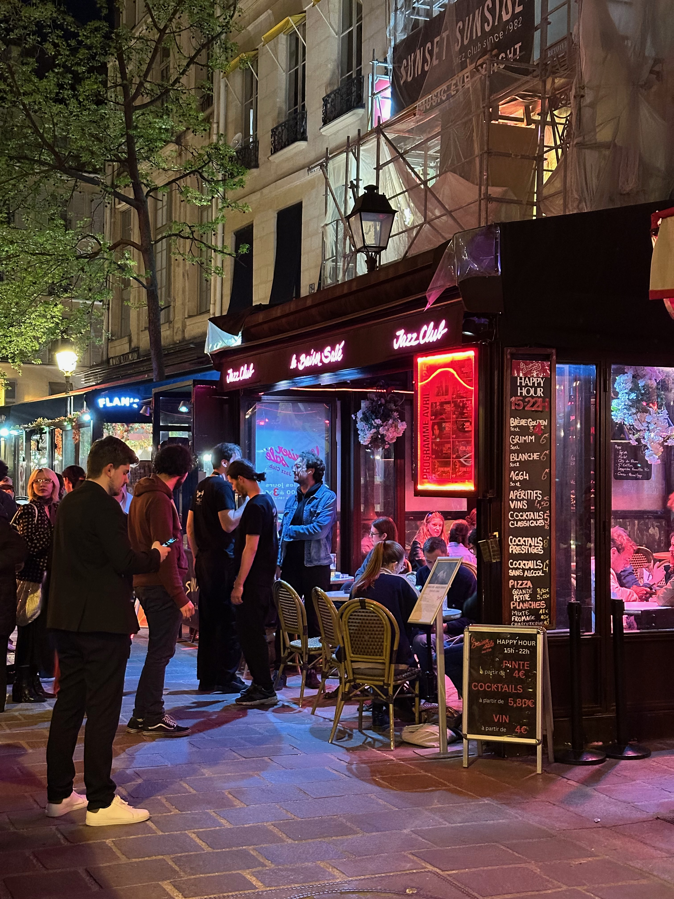

News / Talk & Lecture
강연과 대화 자리에 참여하며 실무 밖의 언어를 확장하고 있습니다

Participating in talks and public conversations has become part of the studio's method, helping project language grow beyond internal practice and into clearer public meaning.
Why These Conversations Matter
최근 참여한 강연에서는 도시와 문화, 환대, 장소성에 관한 다양한 실천 사례를 들으며 작업의 언어를 다시 점검하게 되었습니다. 실무 현장 안에서는 당연하게 여겼던 표현과 기준들이, 다른 분야의 언어를 통과하면 전혀 다른 질문으로 되돌아오곤 합니다.
강연장은 지식을 일방적으로 전달받는 장소라기보다, 각자의 실천이 어디에서 만나고 어긋나는지를 확인하는 자리였습니다. 스튜디오 역시 이런 장면 속에서 스스로의 작업을 더 분명하게 설명할 수 있는 새로운 단어들을 얻게 됩니다.
How It Changes the Studio
무엇을 설계할 것인가만큼이나 어떻게 설명하고 누구와 공유할 것인가가 중요하다는 점을 다시 확인했습니다. 실제 프로젝트를 준비할 때도 개념을 내부 언어로만 굳히지 않고, 외부의 관객과 협업자에게 더 열려 있는 문장으로 바꾸는 작업이 점점 중요해지고 있습니다.
이런 대화의 경험은 앞으로 스튜디오가 프로젝트를 제안하고 기록하는 방식에도 조금씩 반영될 예정입니다. News 섹션은 그 변화의 흔적을 담는 가장 직접적인 장소가 될 것입니다.
Conversation Log
Compiled by. cloudocloud
Shared. February 2026